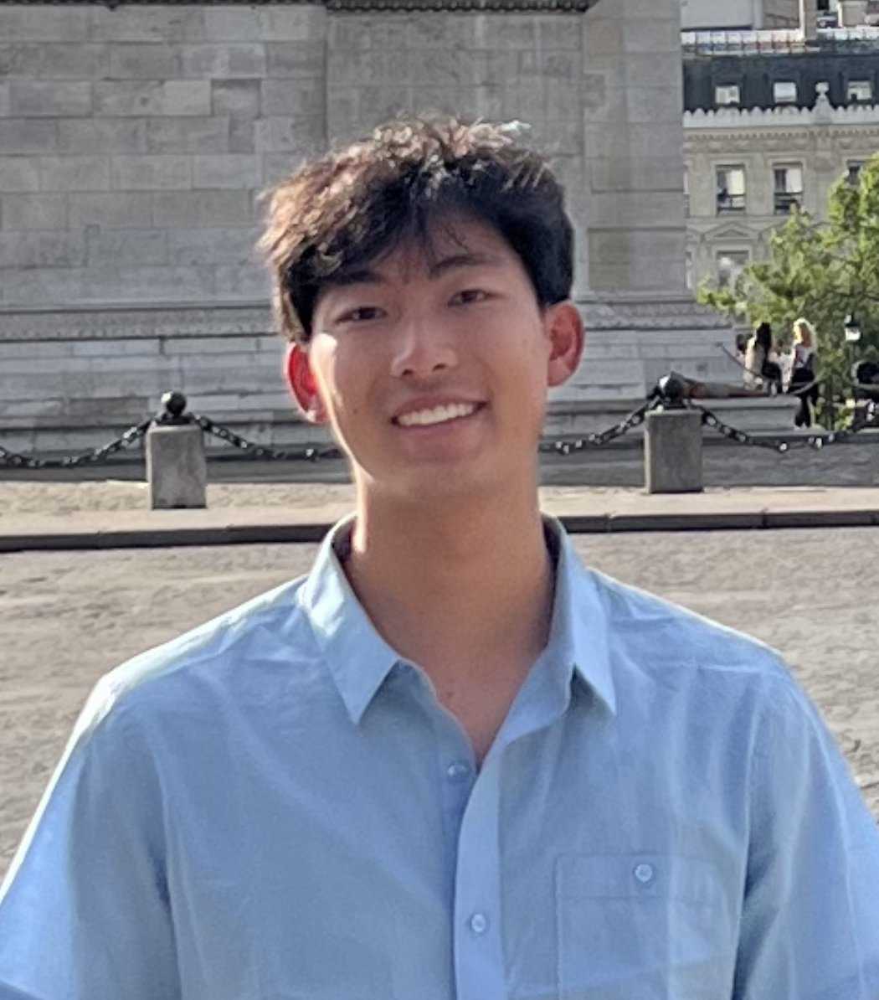

Andy Qiao

Contact Me
Objective
To obtain an internship opportunity that allows me to utilize my web development, data visualization, data collection, and marketing/advertising knowledge and skills.
Education
- University of Illinois at Urbana-Champaign
- Bachelor of Science Major in Computer Science + Advertising
- Graduation Date: May 2026
- Major GPA: 3.92/4.00
- William Jones College Preparatory High School (Chicago, IL)
- Diploma with Highest Honors (Eagle Honors)
- Graduation Date: June 2022
- GPA: 3.93/4.00
Honors and Awards
- University of Illinois Provost Scholarship
- August 2022 - Present
- Recipient
- National AP Scholar Award
- July 2020, 2021, 2022
- Recipient
- Jones College Preparatory Computer Science Honors Society
- August 2020 - June 2022
- Participant
- Chicago 4-H International Club Excellence in Art Award
Projects
- Melodic Eyes
- September 2022 - April 2023
- University of Illinois, ACM@UIUC SIGCHI
- As a part of ACM@UIUC, SIGCHI is a human-computer interaction special interest group.
- Working with others, we created our own interactive digital art installation (Melodic Eyes) that consisting of various different works. Hosted on our own website, users have the complete ability to interact with the website hands-free. Depending on where the user is looking within the frame of the painting, a musical note plays based on the color and complexity of the respective area.
- Presented Melodic Eyes at University of Illinois EOH 2023.
- E-Tag Keychain
- November 2022 - Present
- Personal Project
- E-Tag is a fully bespoke keychain with the ability to easily and effectively share different e-sport players’ performance statistics.
- Having already patented the product idea, we are currently developing a website and creating multiple renderings for the product.
Research
- Comic Versus Humans to Increase Persuasion
- January 2023 - Present
- University of Illinois Computer Science
- Working with Professor Ewa Maslowska whose research interests lie in the area of marketing communication and consumer brand interactions in connection with new technologies.
- Also working with Professor Hari Sundaram whose research interests span from applied machine learning and human-computer interaction.
- Current research focuses on implicit stereotypes within generative AI such as ChatGPT-3/3.5 and DALLE.
- Human-Computer Interaction Research
- March 2021 - August 2021
- Pennsylvania State University College of Information Sciences and Technology
- Conducted social media analytics and data visualization research under Prof. Luke Zhang.
- Completed "Applying Data Analytics in Marketing" Coursera course by Prof. Joseph Yun from University of Illinois.
- Collected data of different influencers tweets that may have affected the stock market using the Twitter API.
- Analyzed social media and stock/cryptocurrency data and created an interactive data visualization using D3js.
Coursework
- Intro to Computer Science I (Java)
- Intro to Computer Science II (C++)
- Discrete Structures
- Computer Architecture
- Data Strcutures
- Linear Algebra with Computational Application
- Software Design Lab
- Fundamentals of Web Development
- The Complete 2023 Web Development Bootcamp
- Visual Communication Design
- Advertising Research Methods
- Advertising and Brand Strategy
Experiences
- Childhood Cancer Society (CCS) Internship
- February 2023 - April 2023
- Web Developer/Software Engineer
- Working with multiple teams to discuss ideas on how to renovate the current website.
- Working alongside others to make the homepage interactive, user friendly, and unique.
- Exploring visual options and designing different pages of the website using Figma.
- Optimizing workflow, and managing and adding new tasks using Linear.
- Inspirit AI Summer Program
- July 2021 - August 2021
- Participant
- Learned artificial intelligence concepts and machine learning algorithms from top university graduates.
- Applied natural language processing techniques.
- Built various models using Python for sentiment analysis on financial news.
- Presented an NLP + Finance project to students and instructors.
- Ivy Garden Learning Center
- August 2020 - August 2021
- Part-Time Tutor
- Tutored K-5 students in Math and ELA.
- Explained content-specific concepts.
- Provided assistance with homework assignments to students.
- Evaluated students' performance on tests.
- Chicago 4-H International Club 3D Design and Modeling Program
- June 2021 - July 2021
- Participant
- Participated in a 3D design contest and received Excellence in Art Award/Scholarship.
- Learned how to effectively design and create 3D product models using Fusion 360.
- Learned functional printing techniques to create a material efficient and durable design.
- SAIC’s Visual Communication Early College Program
- June 2020 - August 2020
- Participant
- Worked alongside a faculty of artists and designers in graphic design.
- Learned effective design concepts and strategies and engaged in critiques.
- Showcased my portfolio-quality artwork in one of SAIC's online exhibitions.